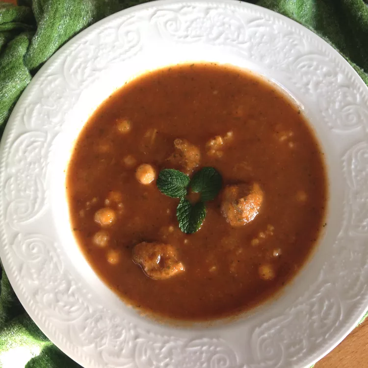

Chorba Hamra bel Frik

Chorba frik is a soup frequently prepared during the month of Ramadan.
It is usually accompanied by briks or böreks.
Ingredients
- 1 cup freekeh
- 12 ounces lamb meat, cut into 1 1/2-inch cubes
- 1 onion, grated
- 1 teaspoon ground black pepper
- 1 teaspoon paprika
- 1 teaspoon ground cinnamon
- salt to taste
- 3 tablespoons vegetable oil
- 1 bunch fresh cilantro, finely chopped, divided
- 1 bunch fresh mint, finely chopped, divided
- 1 stalk celery
- ½ (14 ounce) can chickpeas, drained
- 4 cups water, or as needed
- 1 zucchini, diced
- 1 carrot, diced
- 1 tablespoon tomato paste
- 3 medium ripe tomatoes
- 1 potato, diced
Steps to cook The Chorba Hamra Bel Frik:
- Place freekeh in a small bowl and cover with cold water. Set aside.
- Combine lamb, onion, black pepper, paprika, cinnamon, and salt in a pot. Stir in oil, 1/2 the cilantro, 1/2 the mint, and celery stalk until combined. Simmer over low heat for 15 minutes. Stir in chickpeas; pour in just enough water to cover, and return to a simmer. Stir in zucchini, carrot, and tomato paste.
- Set a steamer over the pot; add tomatoes. Cover and steam tomatoes until soft, about 5 minutes. Crush tomatoes using a wooden spoon, so pulp drips into soup. Remove the steamer and discard leftover tomato peels.
- Add potato to soup and just enough water to cover. Simmer until potato is soft, about 10 minutes.
- Drain freekeh and add to soup. Simmer until soft, about 15 minutes. Remove celery stalk and discard. Sprinkle soup with remaining 1/2 cilantro and remaining 1/2 mint before serving.